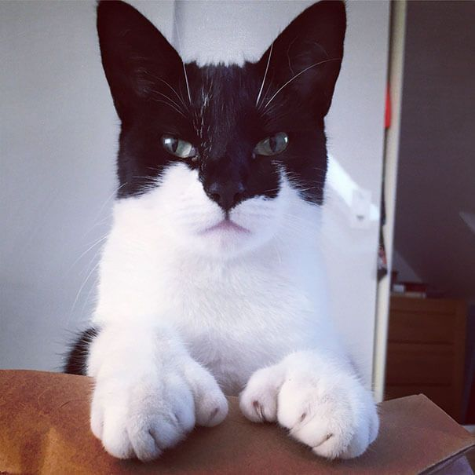

 Batman, es un gato muy amoroso y respetuoso, rescatado desde la comuna de Lo espejo, este gatito de ya un año tiene todas sus vacunas al dia, no le molestan los niños y se desestreza jugando y divirtiendose